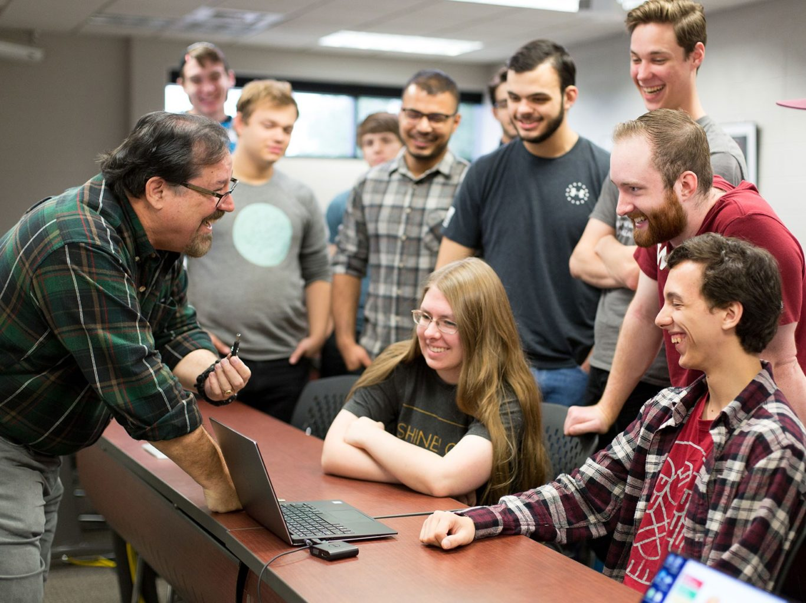

Why should you choose Computer Science at Oklahoma Christian University? There are several reasons for that including: Christian worldview, small class sizes, strong community and friendship to be found, down to earth professors, very strong and highly rated STEM program, etc. A lot of businesses in Edmond and Oklahoma City hire Oklahoma Christian University graduates right out of school. The classes you will take here at this school ( related to Computer Science ) will prepare you for the real world, and your professors will help you to the best of their ability to get a job after you graduate.
